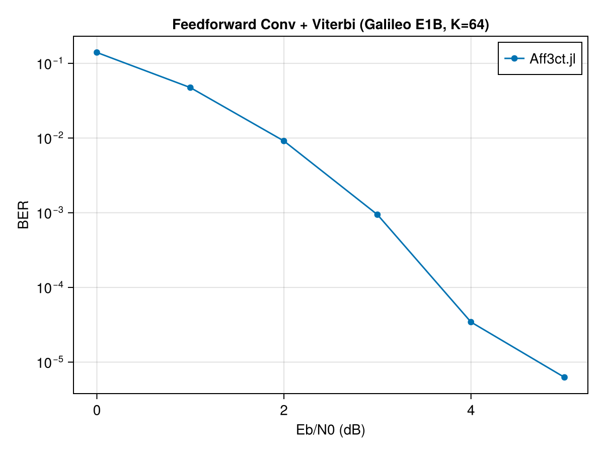

Feedforward Convolutional Codes
Non-systematic convolutional codes with trellis termination, decoded by the Viterbi algorithm. Useful for short-block GNSS signalling (e.g. Galileo E1B uses [0o171, 0o133], constraint length 7).
Distinct from the RSC family: the RSC encoder is recursive and systematic (the information bits appear in the output), whereas ConvEncoder is feedforward and non-systematic — every output bit is a function of the polynomial taps.
API Reference
Aff3ct.ConvEncoder — Type
ConvEncoder(K, N, poly)Feedforward (non-systematic) convolutional encoder with trellis termination.
Constraint: N == length(poly) * (K + n_ff) where n_ff = floor(log2(max(poly))).
K: information bitsN: codeword lengthpoly: generator polynomials in octal, rate =1 / length(poly). Required.
Example
Galileo E1B (poly = [0o171, 0o133], constraint length 7 → n_ff = 6), K = 64 → N = 2 * (64 + 6) = 140:
enc = ConvEncoder(64, 140, [0o171, 0o133])Aff3ct.ConvViterbiDecoder — Type
ConvViterbiDecoder(K, N, poly)Viterbi (SIHO) decoder for feedforward convolutional codes with trellis termination. Distinct from ViterbiDecoder (which decodes RSC codes) because the trellis differs between the two code families.
Expects interleaved LLRs matching ConvEncoder output format.
Verification against upstream references
Galileo E1B-style conv (K=64, poly {0o171, 0o133}, rate 1/2)
Configuration: rate-1/2 feedforward conv code with generator polynomials {0o171, 0o133} (constraint length 7, n_ff = 6 memory elements), Viterbi (SIHO) decoder with trellis termination, BPSK-AWGN.
using Aff3ct, Random
ebn0_to_sigma(ebn0_db, R) = Float32(1.0 / sqrt(2 * R * 10^(ebn0_db / 10)))
function run_conv(K, poly, ebn0_db, n_frames; seed=123)
n_ff = floor(Int, log2(maximum(poly)))
N = length(poly) * (K + n_ff)
R = K / N
sigma = ebn0_to_sigma(ebn0_db, R)
enc = ConvEncoder(K, N, poly)
dec = ConvViterbiDecoder(K, N, poly)
rng = Random.default_rng(); Random.seed!(rng, seed)
total_be = 0
for _ in 1:n_frames
U_K = Int32.(rand(rng, Bool, K))
X_N = encode(enc, U_K)
bpsk = Float32[1f0 - 2f0 * x for x in X_N]
Y_N = Float32[b + sigma * randn(rng, Float32) for b in bpsk]
llrs = Float32[2f0 * y / sigma^2 for y in Y_N]
V_K = decode(dec, llrs)
total_be += count(U_K .!= V_K)
end
return total_be / (n_frames * K)
end
poly = [0o171, 0o133]
ebn0s = [0.0, 1.0, 2.0, 3.0, 4.0, 5.0]
n_frames = 10_000
ber_values = Float64[]
println("Conv + Viterbi (K=64, poly {0o171,0o133}, rate ≈ 1/2) BER:")
for ebn0 in ebn0s
ber = run_conv(64, poly, ebn0, n_frames)
push!(ber_values, ber)
println(" Eb/N0=$(ebn0)dB: BER=$(round(ber, sigdigits=3))")
end
using CairoMakie
fig = Figure()
ax = Axis(fig[1, 1];
xlabel="Eb/N0 (dB)", ylabel="BER",
yscale=log10, title="Feedforward Conv + Viterbi (Galileo E1B, K=64)")
scatterlines!(ax, ebn0s, ber_values; label="Aff3ct.jl", marker=:circle)
axislegend(ax)
fig